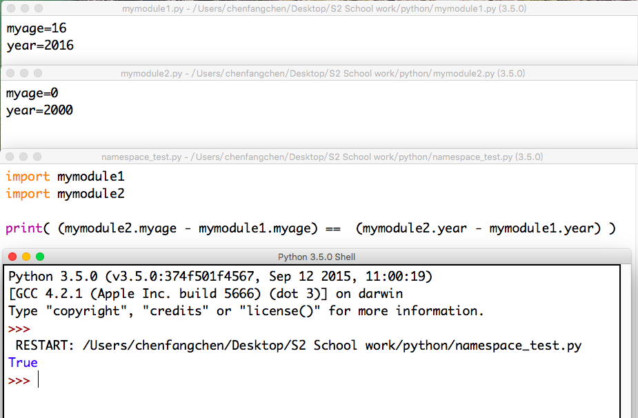

1.
(a) a calendar of 2012 is printed.
(b)
import calendar
cal = calendar.TextCalendar(firstweekday=3)
a=cal.pryear(2012)
(c)
import calendar
cal = calendar.TextCalendar()
a=cal.prmonth(2016,4)
(d)
import calendar
d = calendar.LocaleTextCalendar(0,"zh_CN")
d.pryear(2016)
A few that works: zh_CN (not raising error but printing nonsense); en_US; es_ES
(e) It expects an integer (a year) as an argument. It returns a boolean value. It's a boolean function.
2.
(a) 44
(b) math.ceil(x) returns the smallest interger greater than or equal to x; math.floor(x) returns the greatest integer smaller than or equal to x.
(c) We tried squaring natural numbers until it exceeds the given value, then tried adding 0.1s to the last number, then 0.01s and so on.
(d) e = 2.718281828459045 ; pi = 3.141592653589793
3
A deep copy constructs a new compound object and then, recursively, inserts *copies* into it of the objects found in the original.
We can use deep copy so correct the code in exercise 11 from the last chapter.
4

5.
My name is mymodule1
My name is mymodule2
My name is __main__
True
The operations in modules are executed when importing.
name shows which module the operation is.
The new statement only show up when executing module1.
6.
"Namespaces are one honking great idea -- let's do more of those!"
7.
def myreplace(old, new, s):
""" Replace all occurrences of old with new in s. """
return new.join(s.split(old))
##>>> myreplace(",", ";", "this, that, and some other thing")=="this; that; and some other thing"
##True
##>>> myreplace(" ", "**","Words will now be separated by stars.") =="Words**will**now**be**separated**by**stars."
##True
8.
from unittest import test
import string
def cleanword(s):
s_without_punct = ""
for letter in s:
if letter not in string.punctuation:
s_without_punct += letter
return s_without_punct
def has_dashdash(s):
for i in range(len(s)-1):
if s[i]=='-' and s[i+1]=='-':
return True
return False
def extract_words(s):
s=list(s)
no=string.punctuation+' '
for i in range(len(s)):
if s[i] in no:
s[i]=' '
news=''
for i in s:
news+=i
news=news.lower()
news=news.split()
return news
def wordcount(a,s):
count=0
for i in s:
if a == i:
count+=1
return count
def wordset(s):
remain=[]
for i in s:
if not i in remain:
remain.append(i)
remain.sort()
return remain
def longestword(s):
result=0
for i in s:
a=len(i)
if a>result:
result=a
return result
test(cleanword("what?") == "what")
test(cleanword("'now!'") == "now")
test(cleanword("?+='w-o-r-d!,@$()'") == "word")
test(has_dashdash("distance--but"))
test(not has_dashdash("several"))
test(has_dashdash("spoke--"))
test(has_dashdash("distance--but"))
test(not has_dashdash("-yo-yo-"))
test(extract_words("Now is the time! 'Now', is the time? Yes, now.") == ['now','is','the','time','now','is','the','time','yes','now'])
test(extract_words("she tried to curtsey as she spoke--fancy") == ['she','tried','to','curtsey','as','she','spoke','fancy'])
test(wordcount("now", ["now","is","time","is","now","is","is"]) == 2)
test(wordcount("is", ["now","is","time","is","now","the","is"]) == 3)
test(wordcount("time", ["now","is","time","is","now","is","is"]) == 1)
test(wordcount("frog", ["now","is","time","is","now","is","is"]) == 0)
test(wordset(["now", "is", "time", "is", "now", "is", "is"]) == ["is", "now", "time"])
test(wordset(["I", "a", "a", "is", "a", "is", "I", "am"]) == ["I", "a", "am", "is"])
test(wordset(["or", "a", "am", "is", "are", "be", "but", "am"]) == ["a", "am", "are", "be", "but", "is", "or"])
test(longestword(["a", "apple", "pear", "grape"]) == 5)
test(longestword(["a", "am", "I", "be"]) == 2)
test(longestword(["this","supercalifragilisticexpialidocious"]) == 34)
test(longestword([ ]) == 0)